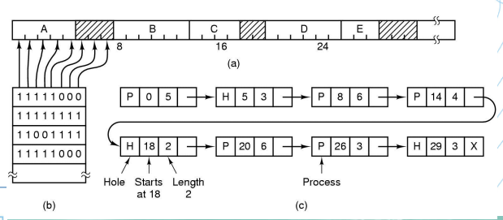
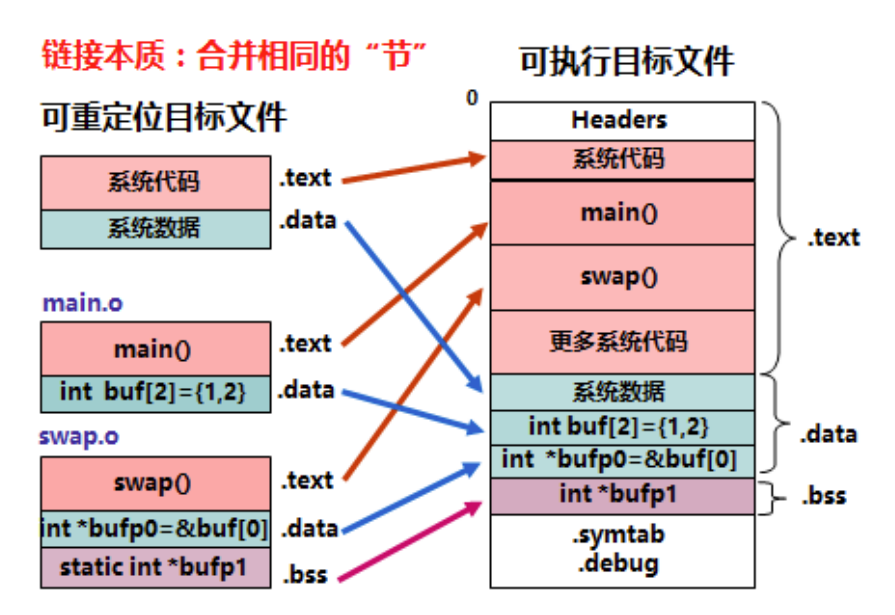
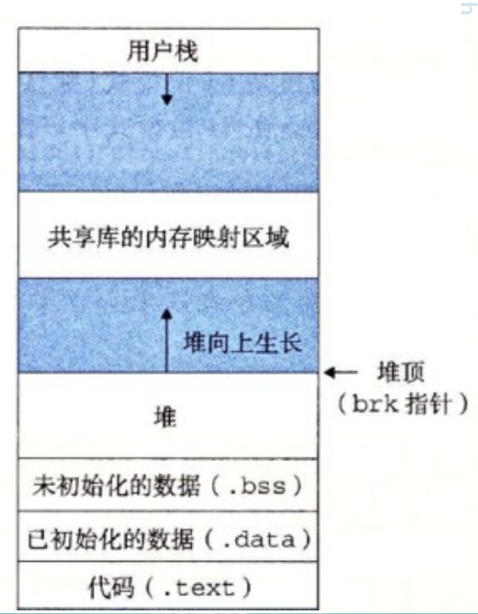

OS note
OS note
系统引导
Bootloader
- 引导加载程序是系统加电后运行的第一段软件代码
- Boot: 初始化系统硬件使之运行起来，至少是部分运行起来；
- Loader: 将操作系统映像加载到内存中，并跳转到操作系统的代码运行
- 分为 stage1 和 stage2
U-Boot
- stage1: 依赖于 cpu 体系结构的代码，且可以用汇编语言来实现
- stage2: 用 C 语言来实现，这样可以实现复杂的功能，而且有更好的可读性和移植性
- MIPS 的基本地址空间
- kuseg: 0x0000’0000~0x7fff’ffff 用户态可用，地址需要 MMU 转换
- kseg0: 0x8000’0000~0x9fff’ffff 最高位清零即可映射到物理地址段 512M(0x000’0000~0x1fff’ffff)，需要通过 cache 存取
- kseg1: 0xa000’0000~0xbfff’ffff 高三位清零可映射到相应的物理地址上，但不需通过 cache 存取，系统启动时唯一正常工作的地址空间
- kseg2: 0xc000’0000~0xffff’ffff 只能在核心态下使用并且要经过 MMU 的转换
内存管理
存储层次
- 寄存器 -> 快速缓存 -> 主存 -> 外存
存储管理的目标
- 地址独立：程序发出的地址与物理地址无关
- 地址保护：一个程序不能访问另一个程序的地址空间
单道程序的内存管理
- 静态地址翻译：在程序运行之前就计算出所有物理地址
- 最简单，适用于单用户、单任务的 OS，但比物理内存大的程序无法加载，因而无法运行。资源浪费（小程序会造成空间浪费；不区分常用 / 非常用数据；I/O 时间长会造成计算资源浪费）
多道程序的存储管理
- 分区式分配：把内存分为一些大小相等或不等的分区，每个应用程序占用一个或几个分区。操作系统占用其中一个分区
- 适用于多道程序系统和分时系统，支持多个程序并发执行，但难以进行内存分区的共享
系统中的碎片
- 内部碎片：分配给作业的存储空间中未被利用的部分
- 无法被整理，但作业完成后会得到释放
- 外部碎片：系统中无法利用的小的空闲分区。如分区与分区之间存在的碎片
- 动态分区管理会产生外部碎片，外部碎片可以被整理后清除
分区式分配
- 固定式分区：内存划分为若干个固定大小的连续分区
- 分配方式
- 单一队列的分配方式
- 多队列分配方式
- 易于实现，开销小，分区总数固定，限制了并发执行的程序数目
- 没有外碎片，但有内碎片
- 分配方式
- 可变式分区：分区的边界可以移动，即分区的大小可变
- 没有内碎片，但有外碎片
跟踪内存
- 位图表示法：给每个分配单元赋予一个字位，用来记录该分配单元是否闲置
- 链表表示法：将分配单元按照是否闲置链接起来

分区分配操作算法
基于顺序搜索的分配算法
- 首次适应算法（First Fit）：每个空白区按其在存储空间中地址递增的顺序连在一起，在为作业分配存储区域时，从这个空白区域链的始端开始查找，选择第一个足以满足请求的空白块。
- 下次适应算法（Next Fit）：把存储空间中空白区构成一个循环链，每次为存储请求查找合适的分区时，总是从上次查找结束的地方开始，只要找到一个足够大的空白区，就将它划分后分配出去。
- 最佳适应算法（Best Fit）：为一个作业选择分区时，总是寻找其大小最接近于作业所要求的存储区域。
- 最坏适应算法（Worst Fit）：为作业选择存储区域时，总是寻找最大的空白区。
基于索引搜索的分配算法
- 快速适应算法：把空闲分区按容量大小进行分类，经常用到长度的空闲区设立单独的空闲区链表。系统为多个空闲链表设立一张管理索引表。根据程序的长度，寻找到能容纳它的最小空闲区链表，取下第一块进行分配即可。
伙伴系统
- 在分配存储块时将一个大的存储块分裂成两个大小相等的小块，这两个小块就称为“伙伴”，拆出一个二叉树，找到最佳适应的大小分配。释放时与伙伴合并
程序的链接和装入
链接
- 静态链接：当我们希望共享库的函数代码直接链接入程序代码中
- 动态链接：用于链接共享库代码。当程序运行中需要某些目标模块时，才对它们进行链接，高效且节省内存空间但慢
- 编译 C 程序的时候，是以.c 文件作为编译单元的，编译为.o，将这些.o 文件链接到一起，形成最终的可执行文件，将之前未填写的地址填写，重定位(Relocation)

装入
- 程序在内存中的位置经常要改变，需要一个重定位寄存器
- 静态重定位
- 动态重定位
程序段
- bss 段：（bss segment）用来存放程序中 未初始化 的全局变量的一块内存区域，于静态内存分配
- data 段：存放程序中 已初始化 的全局变量的一块内存区域。数据段属于静态内存分配
- text 段：存放程序执行代码的一块内存区域，大小确定，只读
- 栈(stack)：存放、交换临时数据的内存区
- 堆(heap)：存放进程运行中动态分配的内存段

程序、进程和作业
- 程序是静止的，是存放在磁盘上的可执行文件
- 进程是动态的，有生存周期，包括程序和程序处理对象，是一个程序对某个数据集的执行过程，是分配资源的基本单位。分为系统进程、用户进程
- 作业是用户需要计算机完成的某项任务，是要求计算机所做工作的集合
- 作业是用户向计算机提交任务的任务实体，而进程则是完成用户任务的执行实体
- 每一个进程由进程控制块 PCB、程序和数据集合组成
分页式储存管理
- 把每个作业的地址空间分成一些大小相等的片，称之为页面或页
- 把主存的存储空间也分成与页面相同大小的片，这些片称为存储块，或称为页框
纯分页系统
- 不具备页面对换功能，必须把它的所有页一次装到主存的页框内；如果当时页框数不足，则该作业必须等待，系统再调度另外作业。
地址结构
- 每页大小 2^12=4KB
- 逻辑地址：页号[31:12] + 偏移[11:0]
- 物理地址：块号[31:12] + 偏移[11:0]
数据结构
- 进程页表：每个进程有一个页表，描述该进程占用的物理页面及逻辑排列顺序
- 逻辑页号（本进程的地址空间）－> 物理页面号（实际内存空间）
- 物理页面表：整个系统有一个物理页面表，描述物理内存空间的分配使用状况
- 位图 / 空闲页面链表
- 请求表：整个系统有一个请求表，描述系统内各个进程页表的位置和大小，用于地址转换，也可以结合到各进程的 PCB 里